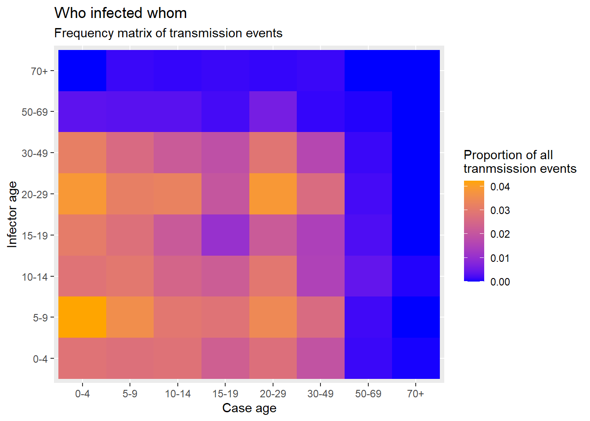
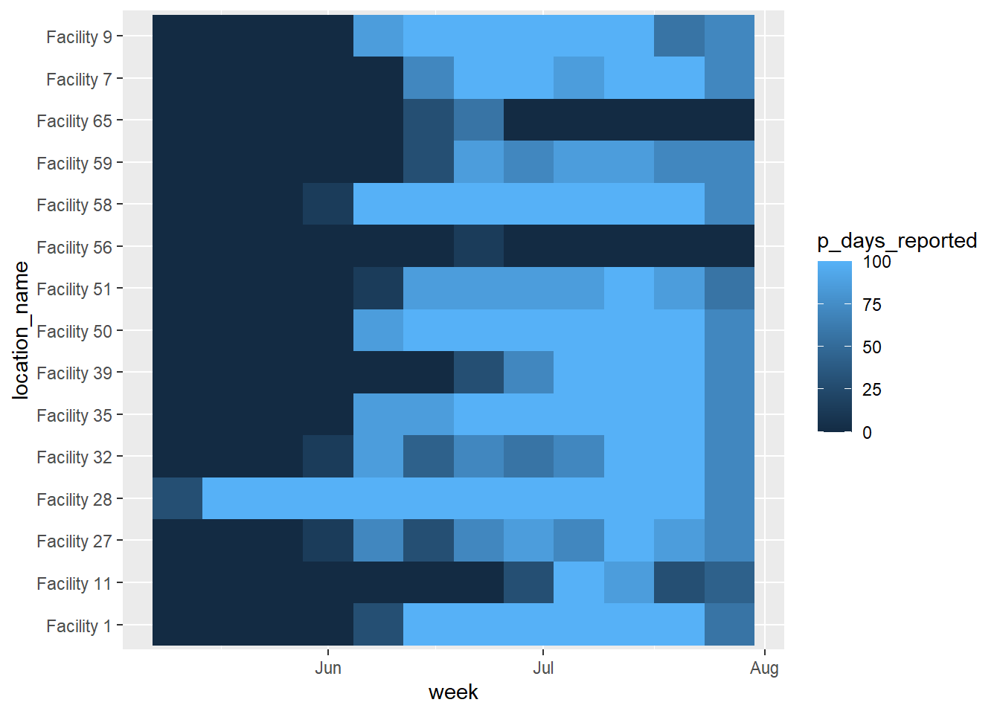
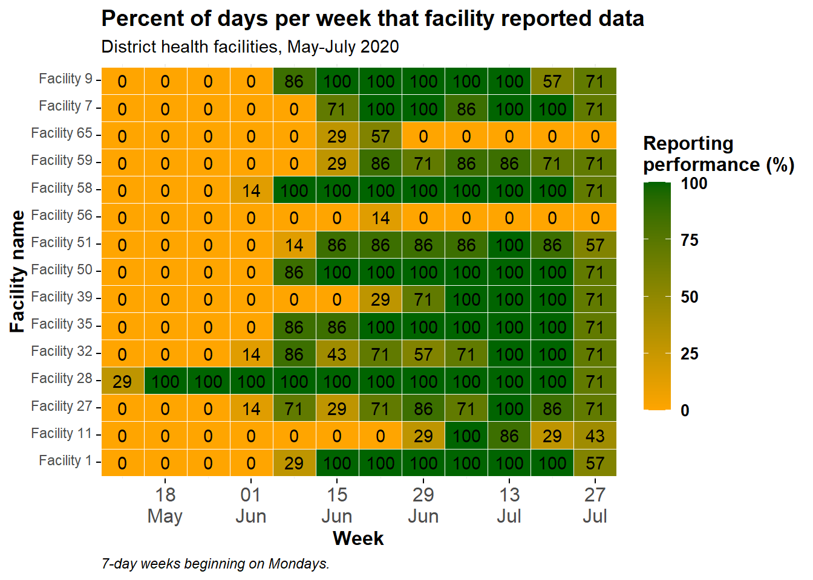

34 Biểu đồ nhiệt
Biểu đồ nhiệt, còn được gọi là “bản đồ nhiệt” hoặc “bảng nhiệt”, là những hình ảnh trực quan hữu ích khi cố gắng hiển thị 3 biến (trục x, trục y và màu sắc). Dưới đây chúng tôi minh họa hai ví dụ:
- Ma trận trực quan về các sự kiện lây truyền theo độ tuổi (“ai lây nhiễm cho ai”)
- Theo dõi các chỉ số báo cáo trên nhiều cơ sở/khu vực theo thời gian


34.1 Chuẩn bị
Gọi packages
Đoạn code dưới đây hiển thị cách gọi các packages cần thiết cho việc phân tích dữ liệu. Trong cuốn sách này, chúng tôi nhấn mạnh đến hàm p_load() từ package pacman, cài đặt packages nếu cần và gọi chúng ra để sử dụng. Bạn cũng có thể gọi các packages đã cài đặt với hàm library() từ base R. Xem chương R cơ bản để biết thêm thông tin về các packages trong R.
pacman::p_load(
tidyverse, # data manipulation and visualization
rio, # importing data
lubridate # working with dates
)Bộ dữ liệu
Chương này sẽ sử dụng bộ dữ liệu linelist-một vụ dịch mô phỏng trong mục ma trận lây truyền và bộ dữ liệu về số trường hợp sốt rét được ghi nhận hàng ngày theo cơ sở trong phần theo dõi các chỉ số báo cáo. Các bộ dữ liệu sẽ được gọi và làm sạch trong khi trình bày.
34.2 Ma trận lây truyền
Bảng nhiệt có thể hữu ích để trực quan hóa ma trận. Một ví dụ là hiển thị “ai đã lây nhiễm cho ai” trong một vụ dịch. Giả sử rằng bạn có đầy đủ thông tin về các sự kiện lây truyền.
Lưu ý rằng chương Truy vết tiếp xúc có một ví dụ khác về tạo ma trận tiếp xúc thành bảng nhiệt, sử dụng một dataset khác (có lẽ đơn giản hơn) trong đó tuổi của các trường hợp và nguồn lây của chúng được căn chỉnh gọn gàng trên cùng một hàng của data frame. Dataset này cũng được sử dụng để tạo bản đồ mật độ trong chương Các tips với ggplot. Ví dụ dưới đây bắt đầu từ một danh sách các trường hợp và yêu cầu nhiều thao tác biến đổi dữ liệu trước khi thành một data frame sẵn sàng để vẽ biểu đồ. Vì vậy, có rất nhiều kịch bản để bạn lựa chọn…
Chúng tôi bắt đầu từ danh sách trường hợp của một vụ dịch Ebola mô phỏng. Nếu bạn muốn theo dõi, hãy bấm để tải bộ dữ liệu linelist “đã làm sạch” (as .rds file). Nhập dữ liệu của bạn bằng hàm import() từ package rio (hàm này chấp nhận nhiều loại tệp như .xlsx, .rds, .csv - Xem chương Nhập xuất dữ liệu để biết thêm chi tiết).
Danh sách dưới đây bao gồm 50 hàng đầu tiên của linelist:
Trong bộ dữ liệu linelist này:
- Mỗi trường hợp được thể hiện trên một hàng, được định danh bằng
case_id
- Kéo sang phải bạn sẽ thấy cột
infectorcó chứacase_idcủa nguồn lây, mỗi nguồn lây cũng là một trường hợp trong linelist
Chuẩn bị dữ liệu
Mục tiêu: Chúng ta cần tạo một data frame dạng “dọc”, tức là mỗi đường lây truyền theo lứa tuổi có thể có nằm trên một hàng, với một cột số chứa tỷ lệ của hàng đó đối với tất cả các sự kiện lây nhiễm được quan sát trong linelist.
Để đạt được mục tiêu này, một số bước biến đổi dữ liệu cần được thực hiện:
Tạo data frame các trường hợp
Để bắt đầu, chúng ta tạo một data frame về các trường hợp, bao gồm độ tuổi và nguồn lây nhiễm của chúng - chúng ta đặt tên data frame này là case_ages. 50 hàng đầu tiên của bộ dữ liệu dữ liệu được hiển thị bên dưới.
Tạo data frame nguồn lây nhiễm
Tiếp theo, chúng ta tạo một data frame các nguồn lây nhiễm - tại thời điểm này, nó chỉ gồm một cột duy nhất. Đây là các ID của các nguồn lâu nhiễm trong bộ dữ liệu linelist. Không phải mọi trường hợp đều xác định được nguồn lây, vì vậy chúng ta cần loại bỏ các giá trị missing. 50 hàng đầu tiên được hiển thị bên dưới.
Tiếp theo, chúng ta sử dụng hàm join để thu thập tuổi của những nguồn lây nhiễm. Điều này không đơn giản, vì trong linelist, tuổi của người lây nhiễm không được liệt kê như vậy. Chúng ta sẽ đạt được kết quả này bằng cách nối dữ liệu các trường hợp trong linelist với dữ liệu những người lây nhiễm. Chúng ta bắt đầu với bộ dữ liệu infectors, sau đó dùng hàm left_join() thêm các trường hợp trong linelist sao cho cột id của các trường hợp lây nhiễm trong bộ dữ liệu infector nối với cột case_id trong bộ dữ liệu linelist.
Do đó, dữ liệu từ bản ghi trường hợp của người lây nhiễm trong linelist (bao gồm cả tuổi) được thêm vào hàng của người lây nhiễm. 50 hàng đầu tiên được hiển thị bên dưới.
infector_ages <- infectors %>% # begin with infectors
left_join( # add the linelist data to each infector
linelist,
by = c("infector" = "case_id")) %>% # match infector to their information as a case
select(infector, age_cat) %>% # keep only columns of interest
rename("infector_age_cat" = "age_cat") # rename for claritySau đó, chúng ta kết hợp các trường hợp và tuổi của chúng với những người lây nhiễm và tuổi của những người này lại. Mỗi data frame đều có chung cột infector, vì vậy nó được sử dụng cho phép nối. Các hàng đầu tiên được hiển thị bên dưới:
ages_complete <- case_ages %>%
left_join(
infector_ages,
by = "infector") %>% # each has the column infector
drop_na() # drop rows with any missing data## Warning in left_join(., infector_ages, by = "infector"): Detected an unexpected many-to-many relationship between `x` and `y`.
## ℹ Row 1 of `x` matches multiple rows in `y`.
## ℹ Row 6 of `y` matches multiple rows in `x`.
## ℹ If a many-to-many relationship is expected, set `relationship = "many-to-many"` to
## silence this warning.Dưới đây là bảng chéo đơn giản về số lượng các trường hợp và người lây nhiễm theo nhóm tuổi. Nhãn được thêm vào để phân biệt.
## infectors
## cases 0-4 5-9 10-14 15-19 20-29 30-49 50-69 70+
## 0-4 105 156 105 114 143 117 13 0
## 5-9 102 132 110 102 117 96 12 5
## 10-14 104 109 91 79 120 80 12 4
## 15-19 85 105 82 39 75 69 7 5
## 20-29 101 127 109 80 143 107 22 4
## 30-49 72 97 56 54 98 61 4 5
## 50-69 5 6 15 9 7 5 2 0
## 70+ 1 0 2 0 0 0 0 0Chúng ta có thể chuyển đổi bảng này thành data frame với hàm data.frame() từ base R, hàm sẽ tự động chuyển đổi dữ liệu sang dạng “dọc” để có thể áp dụng trong hàm ggplot(). Các hàng đầu tiên được hiển thị bên dưới.
long_counts <- data.frame(table(
cases = ages_complete$case_age_cat,
infectors = ages_complete$infector_age_cat))Bây giờ chúng ta làm tương tự, nhưng áp dụng hàm prop.table() từ base R vào bảng để thay vì nhận số lượng, chúng ta nhận được tỷ lệ của tất cả các biến. 50 hàng đầu tiên được hiển thị bên dưới.
Tạo biểu đồ nhiệt
Cuối cùng, chúng ta có thể vẽ biểu đồ nhiệt với hàm geom_tile() trong package ggplot2. Xem chương Các tips với ggplot để tìm hiểu sâu hơn về thang màu/tô màu cho biểu đồ, đặc biệt là hàm scale_fill_gradient().
- Bên trong hàm
aes()của hàmgeom_tile(), thiết lập trục x và y tương ứng với tuổi của các trường hợp và tuổi của người lây nhiễm
- Ngoài ra trong hàm
aes(), hãy đặt đối sốfill =tới cột tần suấtFreq- đây là giá trị sẽ được chuyển đổi thành màu gạch - Đặt màu thang đo với
scale_fill_gradient()- bạn có thể chỉ định màu cao/thấp- Lưu ý rằng
scale_color_gradient()là một cái khác! Trong trường hợp này, bạn sẽ sử dụng fill
- Lưu ý rằng
- Bởi vì màu được tạo thông qua “fill”, bạn có thể sử dụng đối số
fill =đối số trong hàmlabs()để thay đổi tiêu đề chú giải
ggplot(data = long_prop)+ # use long data, with proportions as Freq
geom_tile( # visualize it in tiles
aes(
x = cases, # x-axis is case age
y = infectors, # y-axis is infector age
fill = Freq))+ # color of the tile is the Freq column in the data
scale_fill_gradient( # adjust the fill color of the tiles
low = "blue",
high = "orange")+
labs( # labels
x = "Case age",
y = "Infector age",
title = "Who infected whom",
subtitle = "Frequency matrix of transmission events",
fill = "Proportion of all\ntranmsission events" # legend title
)
34.3 Các chỉ số báo cáo theo thời gian
Thông thường, trong lĩnh vực y tế công cộng, một mục tiêu là đánh giá xu hướng theo thời gian của nhiều thực thể (cơ sở điều trị, địa giới hành chính, v.v.). Một cách để hình dung các xu hướng như vậy theo thời gian là biểu đồ nhiệt trong đó trục x là thời gian và trên trục y là các thực thể.
Chuẩn bị dữ liệu
Chúng ta bắt đầu bằng cách nhập bộ dữ liệu báo cáo về bệnh sốt rét hàng ngày từ nhiều cơ sở. Các báo cáo chứa dữu liệu về ngày, tỉnh, huyện và số trường hợp sốt rét. Xem chương Tải sách và dữ liệu để biết thông tin về cách tải xuống các dữ liệu này. Dưới đây là 30 hàng đầu tiên:
Tổng hợp và tóm tắt
Mục tiêu của ví dụ này là chuyển đổi tổng số số ca bệnh sốt rét hàng ngày tại các cơ sở (xem trong tab trước) thành số liệu thống kê tóm tắt hàng tuần về hiệu suất báo cáo của cơ sở - trong trường hợp này là tỷ lệ số ngày mỗi tuần mà cơ sở báo cáo bất kỳ dữ liệu nào. Đối với ví dụ này, chúng ta sẽ chỉ hiển thị dữ liệu cho Spring District.
Để đạt được điều này, chúng ta sẽ thực hiện các bước quản lý dữ liệu sau:
- Lọc dữ liệu phù hợp (theo địa điểm, ngày tháng)
- Tạo cột tuần bằng cách sử dụng hàm
floor_date()trong package lubridate- Hàm này trả về ngày bắt đầu trong tuần của một ngày cụ thể, sử dụng ngày bắt đầu được chỉ định của mỗi tuần (ví dụ: “Thứ Hai”)
- Dữ liệu được nhóm theo cột “location” và “week” để tạo ra các đơn vị phân tích “facility-week”
- Hàm
summarise()tạo các cột mới để trình bày thống kê tóm tắt cho từng nhóm cơ sở theo tuần (facility-week):- Số ngày mỗi tuần (7 - một giá trị không đổi)
- Số lượng báo cáo nhận được từ cơ sở-tuần (có thể nhiều hơn 7!)
- Tổng số ca sốt rét do cơ sở báo cáo trong tuần (chỉ dành cho ai quan tâm)
- Số ngày duy nhất trong mỗi cơ sở-tuần có dữ liệu được báo cáo
- Phần trăm trong số 7 ngày mỗi cơ sở-tuần mà dữ liệu được báo cáo
- Số ngày mỗi tuần (7 - một giá trị không đổi)
- Data frame được kết hợp bằng hàm
right_join()thành một danh sách hoàn chỉnh về tất cả các kết hợp cơ sở-tuần có thể có, để làm cho tập dữ liệu hoàn thiện. Ma trận của tất cả các kết hợp có thể có được tạo bằng cách áp dụng hàmexpand()cho hai cột đó của data frame giống như tại thời điểm đó trong chuỗi pipe (được biểu thị bằng.). Vì sử dụng hàmright_join(), nên tất cả các hàng trong data frameexpand()mở rộng được giữ lại và được thêm vàoagg_weeksnếu cần. Các hàng mới này xuất hiện với các giá trị tóm tắtNA(missing).
Dưới đây là từng bước thực hiện:
# Create weekly summary dataset
agg_weeks <- facility_count_data %>%
# filter the data as appropriate
filter(
District == "Spring",
data_date < as.Date("2020-08-01")) Bây giờ tập dữ liệu có số lượng hàng tính theo agg_week nrow(agg_weeks), trong khi trước được tính theo facility_count_data nrow(facility_count_data).
Tiếp theo, chúng ta tạo cột tuần để phản ánh ngày bắt đầu trong tuần cho mỗi bản ghi. Thực hiện điều này với hàm floor_date () trong package lubridate, giúp thiết lập theo “tuần” và các tuần sẽ bắt đầu vào Thứ Hai (ngày 1 trong tuần - Chủ Nhật sẽ là 7). Các hàng đầu tiên được hiển thị như bên dưới.
agg_weeks <- agg_weeks %>%
# Create week column from data_date
mutate(
week = lubridate::floor_date( # create new column of weeks
data_date, # date column
unit = "week", # give start of the week
week_start = 1)) # weeks to start on Mondays Cột tuần mới này có thể được nhìn thấy ở ngoài cùng bên phải của data frame được tạo ra:
Bây giờ chúng ta nhóm dữ liệu thành các cơ sở-tuần và tóm tắt chúng để tạo ra số liệu thống kê cho mỗi cơ sở-tuần. Xem thêm chương Bảng mô tả để biết các mẹo. Bản thân việc nhóm sẽ không làm thay đổi data frame, nhưng nó ảnh hưởng đến cách các thống kê tóm tắt tiếp theo được tính toán.
Các hàng đầu tiên được hiển thị bên dưới. Lưu ý cách các cột đã thay đổi hoàn toàn để phản ánh thống kê tóm tắt mong muốn. Mỗi hàng phản ánh một cơ sở-tuần.
agg_weeks <- agg_weeks %>%
# Group into facility-weeks
group_by(location_name, week) %>%
# Create summary statistics columns on the grouped data
summarize(
n_days = 7, # 7 days per week
n_reports = dplyr::n(), # number of reports received per week (could be >7)
malaria_tot = sum(malaria_tot, na.rm = T), # total malaria cases reported
n_days_reported = length(unique(data_date)), # number of unique days reporting per week
p_days_reported = round(100*(n_days_reported / n_days))) %>% # percent of days reporting
ungroup(location_name, week) # ungroup so expand() works in next stepCuối cùng, chúng ta chạy lệnh dưới đây để đảm bảo rằng TẤT CẢ các cặp cơ sở điều trị-tuần báo cáo có thể có trong dữ liệu, ngay cả khi chúng bị missing trước đó.
Chúng ta tiếp tục sử dụng hàm right_join() trên chính dữ liệu (tập dữ liệu được thể hiện bởi dấu “.”) vừa được mở rộng để bao gồm tất cả các kết hợp có thể có của các cột week và location_name. Xem tài liệu về hàm expand() trong chương Xoay trục dữ liệu. Trước khi chạy đoạn lệnh này, tập dữ liệu cần chứa nrow(agg_weeks) hàng.
# Create data frame of every possible facility-week
expanded_weeks <- agg_weeks %>%
tidyr::expand(location_name, week) # expand data frame to include all possible facility-week combinationsĐây là expanded_weeks:
TRước khi chạy dòng lệnh này, agg_weeks bao gồm nrow(agg_weeks) hàng.
# Use a right-join with the expanded facility-week list to fill-in the missing gaps in the data
agg_weeks <- agg_weeks %>%
right_join(expanded_weeks) %>% # Ensure every possible facility-week combination appears in the data
mutate(p_days_reported = replace_na(p_days_reported, 0)) # convert missing values to 0 ## Joining with `by = join_by(location_name, week)`Sau khi chạy dòng lệnh này, agg_weeks vẫn bao gồm nrow(agg_weeks) hàng.
Tạo biểu đồ nhiệt
Hàm ggplot() được thực hiện bằng cách sử dụng hàm geom_tile() từ package ggplot2:
- Các tuần trên trục x được chuyển đổi thành ngày tháng, cho phép sử dụng
scale_x_date()
location_nametrên trục y sẽ hiển thị tất cả các tên cơ sởfillđược gán chop_days_reported, hiệu suất cho cơ sở-tuần đó (dạng số)scale_fill_gradient()được sử dụng để tô màu cho biến dạng số, cụ thể màu sắc gồm cao, thấp vàNA
scale_x_date()được sử dụng trên trục x, chỉ định các nhãn 2 tuần một lần và định dạng của chúng
- Các chủ đề và nhãn hiển thị có thể được điều chỉnh khi cần thiết
Cơ bản
Biểu đồ nhiệt cơ bản sẽ được tạo như bên dưới, sử dụng màu, thang đo, v.v mặc định. Như đã giải thích ở trên, trong aes() của hàm geom_tile(), bạn phải cung cấp cột trục x, cột trục y, và một cột cho fill =. Phần tô là giá trị số thể hiện dưới dạng màu ô.

Làm sạch biểu đồ nhiệt
Chúng ta có thể làm cho biểu đồ này trông đẹp hơn bằng cách thêm các hàm ggplot2 bổ sung, như được hiển thị bên dưới. Xem thêm chương Các tips với ggplot để biết thêm chi tiết.
ggplot(data = agg_weeks)+
# show data as tiles
geom_tile(
aes(x = week,
y = location_name,
fill = p_days_reported),
color = "white")+ # white gridlines
scale_fill_gradient(
low = "orange",
high = "darkgreen",
na.value = "grey80")+
# date axis
scale_x_date(
expand = c(0,0), # remove extra space on sides
date_breaks = "2 weeks", # labels every 2 weeks
date_labels = "%d\n%b")+ # format is day over month (\n in newline)
# aesthetic themes
theme_minimal()+ # simplify background
theme(
legend.title = element_text(size=12, face="bold"),
legend.text = element_text(size=10, face="bold"),
legend.key.height = grid::unit(1,"cm"), # height of legend key
legend.key.width = grid::unit(0.6,"cm"), # width of legend key
axis.text.x = element_text(size=12), # axis text size
axis.text.y = element_text(vjust=0.2), # axis text alignment
axis.ticks = element_line(size=0.4),
axis.title = element_text(size=12, face="bold"), # axis title size and bold
plot.title = element_text(hjust=0,size=14,face="bold"), # title right-aligned, large, bold
plot.caption = element_text(hjust = 0, face = "italic") # caption right-aligned and italic
)+
# plot labels
labs(x = "Week",
y = "Facility name",
fill = "Reporting\nperformance (%)", # legend title, because legend shows fill
title = "Percent of days per week that facility reported data",
subtitle = "District health facilities, May-July 2020",
caption = "7-day weeks beginning on Mondays.")Sắp xếp thứ tự trục y
Hiện tại, các cơ sở được sắp xếp theo thứ tự “theo bảng chữ cái” từ dưới lên trên. Nếu bạn muốn điều chỉnh thứ tự các cơ sở trục y, hãy chuyển đổi chúng thành factor thứ bậc và cung cấp thứ tự. Xem thêm chương Factors để biết các mẹo để thực hiện điều này.
Vì có rất nhiều cơ sở và chúng ta không muốn viết hết chúng ra, chúng ta sẽ thử một cách tiếp cận khác - sắp xếp thứ tự các cơ sở trong data frame và sử dụng cột tên kết quả làm thứ tự của factor. Bên dưới, cột location_name được chuyển đổi thành một factor và thứ tự của các cấp của nó được đặt dựa trên tổng số ngày báo cáo do cơ sở nộp trong toàn bộ khoảng thời gian.
Để làm điều này, chúng ta tạo một data frame đại diện cho tổng số báo cáo cho mỗi cơ sở, được sắp xếp theo thứ tự tăng dần. Chúng ta có thể sử dụng vectơ này để sắp xếp các mức thứ tự trong biểu đồ.
facility_order <- agg_weeks %>%
group_by(location_name) %>%
summarize(tot_reports = sum(n_days_reported, na.rm=T)) %>%
arrange(tot_reports) # ascending orderXem data frame bên dưới:
Bây giờ, hãy sử dụng một cột từ data frame bên trên (facility_order$location_name) để trở thành thứ bậc factors của biến location_name trong data frame agg_weeks:
# load package
pacman::p_load(forcats)
# create factor and define levels manually
agg_weeks <- agg_weeks %>%
mutate(location_name = fct_relevel(
location_name, facility_order$location_name)
)Và bây giờ dữ liệu được vẽ lại, với location_name trở thành một factor có thứ tự:
ggplot(data = agg_weeks)+
# show data as tiles
geom_tile(
aes(x = week,
y = location_name,
fill = p_days_reported),
color = "white")+ # white gridlines
scale_fill_gradient(
low = "orange",
high = "darkgreen",
na.value = "grey80")+
# date axis
scale_x_date(
expand = c(0,0), # remove extra space on sides
date_breaks = "2 weeks", # labels every 2 weeks
date_labels = "%d\n%b")+ # format is day over month (\n in newline)
# aesthetic themes
theme_minimal()+ # simplify background
theme(
legend.title = element_text(size=12, face="bold"),
legend.text = element_text(size=10, face="bold"),
legend.key.height = grid::unit(1,"cm"), # height of legend key
legend.key.width = grid::unit(0.6,"cm"), # width of legend key
axis.text.x = element_text(size=12), # axis text size
axis.text.y = element_text(vjust=0.2), # axis text alignment
axis.ticks = element_line(size=0.4),
axis.title = element_text(size=12, face="bold"), # axis title size and bold
plot.title = element_text(hjust=0,size=14,face="bold"), # title right-aligned, large, bold
plot.caption = element_text(hjust = 0, face = "italic") # caption right-aligned and italic
)+
# plot labels
labs(x = "Week",
y = "Facility name",
fill = "Reporting\nperformance (%)", # legend title, because legend shows fill
title = "Percent of days per week that facility reported data",
subtitle = "District health facilities, May-July 2020",
caption = "7-day weeks beginning on Mondays.")
Biểu diễn các giá trị
Bạn có thể thêm lớp văn bản geom_text() lên phía trên các ô, để hiển thị số lượng thực của mỗi ô. Hãy lưu ý rằng điều này có thể trông không đẹp nếu bạn có nhiều ô nhỏ!
Đoạn code sau đã được thêm vào: geom_text(aes(label = p_days_reported)). Điều này giúp thêm văn bản vào từng ô. Văn bản được hiển thị là giá trị được gán cho đối số label =, trong trường hợp này đã được đặt thành cùng một cột số p_days_reported cũng được sử dụng để tạo gradient màu.
ggplot(data = agg_weeks)+
# show data as tiles
geom_tile(
aes(x = week,
y = location_name,
fill = p_days_reported),
color = "white")+ # white gridlines
# text
geom_text(
aes(
x = week,
y = location_name,
label = p_days_reported))+ # add text on top of tile
# fill scale
scale_fill_gradient(
low = "orange",
high = "darkgreen",
na.value = "grey80")+
# date axis
scale_x_date(
expand = c(0,0), # remove extra space on sides
date_breaks = "2 weeks", # labels every 2 weeks
date_labels = "%d\n%b")+ # format is day over month (\n in newline)
# aesthetic themes
theme_minimal()+ # simplify background
theme(
legend.title = element_text(size=12, face="bold"),
legend.text = element_text(size=10, face="bold"),
legend.key.height = grid::unit(1,"cm"), # height of legend key
legend.key.width = grid::unit(0.6,"cm"), # width of legend key
axis.text.x = element_text(size=12), # axis text size
axis.text.y = element_text(vjust=0.2), # axis text alignment
axis.ticks = element_line(size=0.4),
axis.title = element_text(size=12, face="bold"), # axis title size and bold
plot.title = element_text(hjust=0,size=14,face="bold"), # title right-aligned, large, bold
plot.caption = element_text(hjust = 0, face = "italic") # caption right-aligned and italic
)+
# plot labels
labs(x = "Week",
y = "Facility name",
fill = "Reporting\nperformance (%)", # legend title, because legend shows fill
title = "Percent of days per week that facility reported data",
subtitle = "District health facilities, May-July 2020",
caption = "7-day weeks beginning on Mondays.")